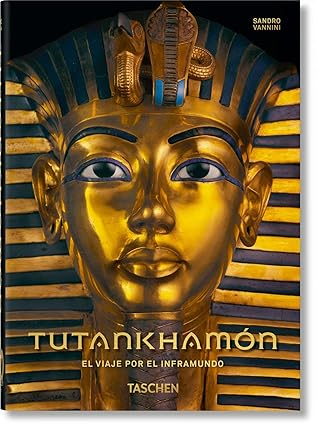

Tutankhamón. El viaje por el inframundo. 40th Ed. (45th Edition) (Spanish Edition)
Reseña por Jorge I. Zuluaga

Ver detalles · Ver reseña en GoodReads (necesita cuenta)
Al leer esta frase, y el bonito epílogo del libro escrito por el fotógrafo, tuve una pequeña epifanía. Creo haber entendido, por un breve momento, la verdadera razón por la que me siento atraído por el antiguo Egipto (que es también, creo yo, la que ha atraído la atención de gentes de todos los tiempos): Egipto parece un país de otro mundo (o del mismo, pero de un "estrato geológico" diferente). Un país desenterrándose lentamente de entre las rocas y la arena.
Me atrae Egipto como me atrae lo extraño, lo extraterrestre (en el más literario sentido de la palabra, ¡pilas!).
Este libro es justamente una mirada adentro de ese mundo extraño pero, al mismo tiempo, lleno de objetos, rituales, actitudes y creencias que nos parecen muy familiares. Parafraseando a Wim Wenders, Egipto está tan lejos pero tan cerca.
Otra cosa interesante que demuestra de muchas maneras este libro es que hemos logrado desenterrar a Egipto gracias a los avances técnicos de la fotografía, la iluminación y el tratamiento digital de imágenes, que son los protagonistas aquí. Pero también gracias a avances científicos en diversas disciplinas que van desde la arqueología y la filología hasta las ciencias forenses y la astronomía. Gozamos de este libro porque, parafraseando a Newton, el fotógrafo y los científicos que escribieron en él se asomaron sobre los hombros de los "gigantes" técnicos y científicos que los precedieron.
Pero vayamos propiamente al contenido del libro.
Como seguramente habrán leído en la descripción, "Tutankhamon, el viaje por el inframundo" pertenece a una colección conmemorativa de los 40 años de Taschen, colección que recoge algunos de los más grandes tesoros de esta reconocida casa editorial.
El libro viene en dos ediciones. Una de gran formato, "el mueble", la llamo yo, que es sencillamente alucinante: estamos hablando de un libro de casi 5 kilogramos con 400 páginas de papel fino, del tamaño de una pequeña mesa de noche y que contiene, entre muchas otras, una selección de las que son posiblemente las mejores fotografías de algunos de los tesoros del ajuar funerario del rey Tutankhamon (Tut para los amigos, como lo seguiré llamando aquí en lo sucesivo). ¡Un verdadero tesoro!
Pero esa edición es un tesoro para tener en un lugar fijo. Es difícil de llevar a ninguna parte (es por eso que lo llamo el mueble); funciona mejor como objeto decorativo que como libro (¿hablará la envidia por mí?).
La segunda versión, que cuesta dos o tres veces menos, es una hermosa edición de "bolsillo", con unas 500 páginas (misma calidad del papel, mismas fotografías espectaculares) que puedes leer y llevar a donde quieras. Esta es la edición que conseguí y reseño aquí. Edición que, debo decir, conseguí por error pensando que se trataba de "el mueble". Me sentí un poco defraudado al principio por no tener la versión grandota que le había visto a mi profesora de egiptología, Elizabeth Noreña (¡pura envidia mía!); con el tiempo descubrí, sin embargo, en mi edición una ventaja: lo pude llevar conmigo y leerlo en cafés, bancos y centros comerciales.
Si me preguntan, y especialmente si tienen los medios económicos y son lo suficientemente entusiastas del antiguo Egipto, yo les diría que compren las dos. Una para leerla y la otra cuando vayan a cambiar los muebles de la sala.
"Pero bueno, debe ser solo un libro con fotos bonitas", dirán algunos, "al fin y al cabo, esa es la especialidad de Taschen". Pero no es así.
Entre sus 500 páginas de fotografías encontramos ocho ensayos ("Muerte y momificación", "Rituales y ofrendas", "El funeral", "Osiris y el juicio", etc.), escritos por reconocidos expertos internacionales (entre los que se encuentra, por ejemplo, la conocida profesora Salima Ikram) que cubren los aspectos más importantes del viaje a y por el inframundo de los difuntos y los dioses en las creencias del antiguo Egipto. De allí viene precisamente su nombre. Aunque los ensayos son cortos, el entusiasta de Egipto (o #KemetLover, como le aprendí a decir a mi profesora Eli) los disfrutará, no solo como buenas piezas de divulgación de la egiptología, sino porque tienen un valor agregado: están profusamente ilustrados con las mejores fotografías de tumbas, templos y objetos que se puedan tener de cada uno de los temas tratados.
A pesar de que la portada y el nombre del libro "prometen" mostrar solo objetos del ajuar funerario del rey Tut, en realidad más de la mitad de las fotografías provienen de los muros de templos, tumbas y objetos de todos los períodos del antiguo Egipto (pero especialmente del Reino Nuevo). Así que no, este no es un libro sobre Tut y los más de 5000 objetos que debían acompañarlo en su viaje al inframundo. Pero ese no es un defecto, es su mejor cualidad.
A través de sus páginas descubrí, por ejemplo, las espectaculares pinturas de las tumbas de Ramsés V y Ramsés VI, que confieso no conocía hasta ahora (¡como si conociera mucho!). La verdad es que los que curioseamos en la egiptología (y también los que no), estamos acostumbrados a ver las espectaculares y coloridas imágenes de los muros de las tumbas de Nefertari (la primera esposa de Ramsés II), del templo de Dendera o de Seti I. Pero es obvio que esa es solo la punta del iceberg y, para mí, descubrir en este libro las tumbas de los dos ramesidas mencionados antes ya valió la pena la adquisición.
De la calidad de las fotografías hay poco que decir que no sea obvio. Estamos hablando del trabajo del que es considerado el mejor fotógrafo del antiguo Egipto. Los detalles que pueden verse en los objetos del ajuar del rey Tut son asombrosos. Parece que se salieran de las páginas y pudieras tocar las superficies pulidas sobre marfil, lapislázuli, electro y, por supuesto, oro, hechas por un hábil artesano de hace 3000 años. Más increíble aún, la claridad con la que pueden verse las imágenes en los muros de tumbas bajo tierra (hipogeas), algunas de las cuales nunca han recibido un solo rayo de sol y que, por la misma razón, fueron pintadas seguramente a la luz de temblorosas llamas de aceite, es sencillamente asombrosa. No es exagerado decir que, de la mano de las técnicas fotográficas y de iluminación de expertos como Vannini (y especialmente de él en particular), podemos ver los muros de estas tumbas con mayor claridad que la que tuvieron los mismos artistas egipcios que las transcribieron sobre piedra hace más de 2000 años. Esta no es una hazaña cualquiera y, por la misma razón, este tampoco es un libro cualquiera.
Los pies de foto del libro, que constituyen la mitad de su contenido "literario", son de primera factura, como es común en los libros de Taschen.
Desde un punto de vista científico (egiptológico), las descripciones son precisas: el período en el que cada pieza e imagen fue creada está debidamente identificado, así como lo está también la persona (o divinidad) para la que fue creada; las transliteraciones y traducciones de algunos de los jeroglíficos son también precisas (aunque no son muy abundantes por razones de espacio). La explicación del contenido de cada imagen es, no solo precisa y exhaustiva, sino que también está bien escrita y es muy ilustrativa. Para los #KemetLovers será una delicia encontrarse en esos pies de foto explicaciones sobre los rituales, las creencias, los dioses, los personajes y hasta la "ciencia" egipcia que encontramos en otros textos. Para mí, por ejemplo, fue un excelente refuerzo a lo aprendido en el curso del Inframundo Egipcio que vi con mi profe Eli.
En síntesis, Taschen lo logró otra vez: este es un libro de colección, un libro para conservar toda la vida, un libro para heredar. Por su calidad, estoy seguro de que perdurará en el tiempo como ha perdurado (aunque tal vez no tanto) el legado cultural y artístico del país de las dos Tierras.
Yo ya advertí en mi casa que, cuando me vaya a los campos de Aaru, quiero llevarme este libro.
Termino esta reseña con este párrafo del autor que me pareció también genial:
El antiguo Egipto está confinado al espacio del mito, enterrado en lo cultural en la tierra donde nació y prosperó, mientras vive eternamente en otra parte. [...] Si, como ellos creían, la inmortalidad también podría garantizarse con solo mencionar el nombre de los muertos, con mi intento de capturar fragmentos del alma del Egipto de los faraones para mostrárselos al mundo, creo que he hecho mi pequeña contribución a este objetivo.
Confirmo. Vannini se ha ganado un puesto en la barca del millón de almas.